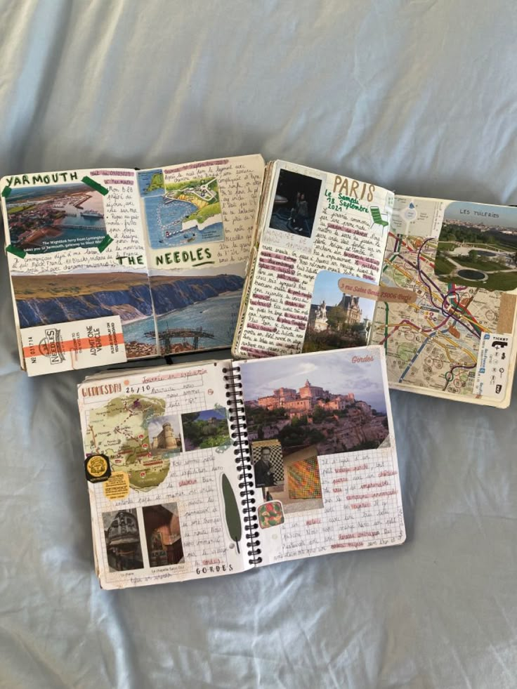
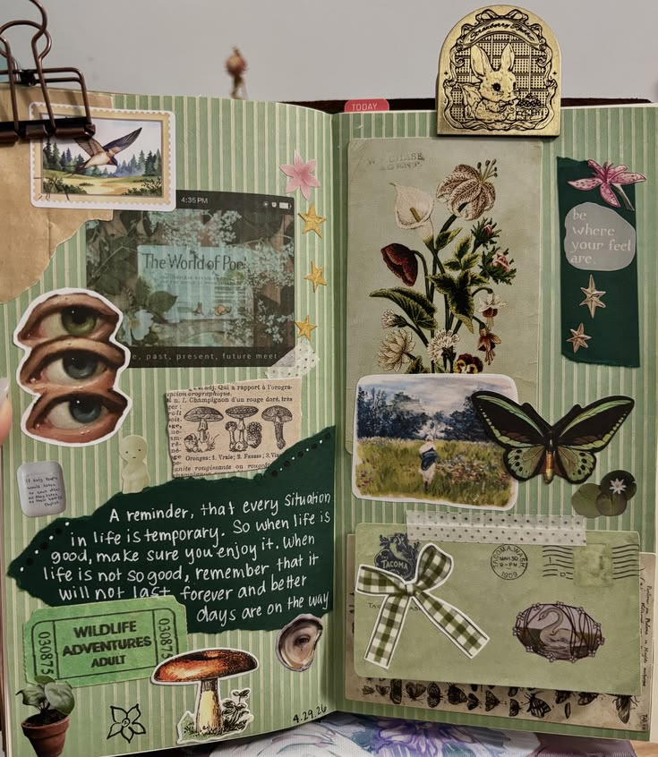

Wanting to get off the internet has been, starting to become a tread on social media. Some have started to get off the internet and start non-digital hobbies.Having a notebooks has been one of the most popular. It helps with creativity, and self-expression, some post how they use their journals to help inspire others to do the same.
Many use their notebooks in several ways, some use it has a way to show their creativity and others use theirs to write what's on their mind. Using journals have made getting off the internet more interesting, to have something small to work on. Journals don't have to be expensive or require many supplies which makes it the most appealing. They can be as simple or as expressive as you want.

